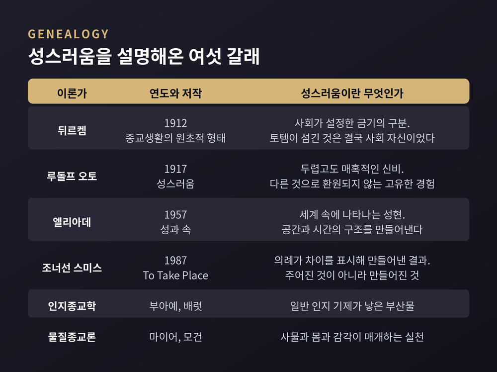

뒤르켐과 오토에서 엘리아데로, 그리고 조너선 스미스의 반론까지 — 성스러움을 둘러싼 백 년의 논쟁
세 줄 요약
이번 글에서는 종교학이 '거룩함'이라는 경험을 어떻게 설명해왔는지 정리해 보겠습니다. 미르체아 엘리아데의 『성과 속』을 축으로 삼되, 그 앞의 계보와 뒤의 반론까지 함께 놓겠습니다. 특정 신앙의 옳고 그름을 따지는 글이 아니라, 학문이 종교를 다루는 방식에 관한 이야기입니다.
출발점은 사회학자 에밀 뒤르켐입니다.
그는 1912년 『종교생활의 원초적 형태』에서 종교를 이렇게 정의했습니다. 종교란 "성스러운 것들, 곧 구별되고 금지된 것들에 관한 믿음과 실천의 통일된 체계"이며, 그것을 따르는 이들을 하나의 도덕 공동체로 묶어주는 것이라고요. 영역본은 1915년 조지프 워드 스웨인의 번역으로 나왔습니다.
여기서 성스러운 것은 금기로 보호되고 격리된 것입니다. 반대편의 속된 것은 우리가 사는 일상의 세계입니다. 사물도 행위도 몸짓도, 대부분은 속에 속합니다.
뒤르켐이 택한 사례는 오스트레일리아 원주민의 토테미즘이었습니다. 그리고 그는 대담한 결론에 도달합니다. 씨족이 성스러운 힘으로 섬기는 토템 동식물은 사실 그 사회 자신이었다는 것입니다.
신 앞에서 느끼는 압도감은, 사회가 개인에게 행사하는 힘의 경험이라는 뜻입니다. 뒤르켐은 사람들이 한자리에 모여 같은 생각을 하고 같은 행동을 할 때 생기는 고양 상태를 집합적 열광이라 불렀습니다. 종교적 감정의 원천을 그 열광에서 찾은 셈입니다.
성과 속의 구분을 학문의 언어로 세운 공은 여기에 있습니다. 다만 그 설명은 성스러움을 사회로 환원합니다.

환원에 반대한 사람이 루돌프 오토입니다.
그의 『성스러움』은 1916년 말에 나와 1917년으로 표기되었습니다. 출간 직후 큰 반향을 일으켰고 여러 언어로 번역되었으며, 영역본은 1923년에 나왔습니다.
오토는 라틴어 누멘에서 누미노제라는 말을 만들었습니다. 신, 영, 신적인 것을 뜻하는 단어입니다. 그가 가리킨 것은 종교 경험의 비합리적 차원이었습니다. 논리로 정돈되기 전의, 몸이 먼저 반응하는 층위입니다.
이 경험을 요약한 표현이 '두렵고도 매혹적인 신비'입니다.
한쪽에는 압도하고 떨리게 만드는 신비가 있습니다. 자신이 작아지는 느낌, 겸손, 복종의 감각이 따라옵니다. 다른 한쪽에는 매혹하는 신비가 있습니다. 갈망하게 만들고 위로가 되며, 그 충만함 속으로 사람을 끌어당깁니다.
두려움과 이끌림이 한 경험 안에 같이 있다는 관찰입니다. 오토는 이것이 도덕으로도 사회로도 환원되지 않는 고유한 범주라고 보았습니다.
미르체아 엘리아데는 1907년 부쿠레슈티에서 태어나 1986년에 세상을 떠났습니다.
1956년부터 시카고대학에서 가르치기 시작해 종교사학과의 교수이자 학과장이 되었고, 1983년 은퇴할 때까지 그 자리에 있었습니다. 1960년에는 학술지 『History of Religions』 공동 편집을 맡았습니다.
『성과 속』은 1957년 독일어판으로 출간되었고, 윌러드 트래스크가 옮긴 영역본이 1959년에 나왔습니다. 자료에 따라 연도 표기가 조금씩 다르다는 점은 감안할 필요가 있습니다.
엘리아데의 첫 번째 열쇳말은 성현입니다. 성스러움의 나타남이라는 뜻입니다.
그는 신의 출현을 가리키는 신현이라는 좁은 말 대신 이 용어를 택했습니다. 성스러움이 반드시 인격신의 모습으로만 오지는 않기 때문입니다. 돌 하나, 나무 한 그루, 특정한 장소도 성현이 될 수 있습니다.
성스러움은 인간 경험 속으로 돌파해 들어옵니다. 그리고 엘리아데에게 세계는 그 돌파를 통해서만 목적과 의미를 얻습니다.
성현이 일어나면 공간이 달라집니다.
성스러운 장소의 등장은 공간의 균질함을 깨뜨립니다. 그전까지 어디나 똑같던 평면에 기준점 하나가 생깁니다. 엘리아데는 이것을 세계의 중심, 곧 axis mundi라 불렀습니다.
중심은 하늘과 땅과 지하가 맞닿는 지점입니다. 여러 신화에 우주 나무와 우주 기둥의 이미지가 반복되는 이유를 그는 여기서 찾습니다. 전통 건축, 특히 신전은 이 축의 형상을 본떠 지어집니다.
신전은 세계의 축소 모형이기도 합니다. 원초적 혼돈 위에 놓인 질서의 상(像)이라는 뜻에서 엘리아데는 그것을 imago mundi라 부릅니다. 그래서 성스러운 공간을 세우는 일은 임의의 선택이 아니라, 언제나 어떤 의미에서 우주 창조의 반복이 됩니다.
시간에도 같은 구조가 적용됩니다.
1949년 파리에서 나온 『영원회귀의 신화』에서 그는 기원의 시간을 illud tempus라 불렀습니다. 세계가 처음 만들어지던 그 시간입니다. 영역본은 1954년에 출간되었습니다.
고대 사회는 의례와 신화로 그 원초적 사건을 주기적으로 되풀이했습니다. 그렇게 해서 역사적 시간의 일방향성을 잠시 무효화하고 창조의 순간에 다시 참여합니다. 축제에 들어가는 일은 달력의 시간에서 걸어 나오는 일과 같습니다.
엘리아데가 든 유명한 사례가 아칠파족의 성스러운 기둥입니다. 신적 존재 눔바쿨라가 고무나무로 기둥을 만들어 기름을 바르고 그것을 타고 하늘로 올라갔다는 이야기입니다. 그 기둥을 중심으로 영토가 비로소 거주 가능한 세계가 됩니다. 기둥이 부러지면 재앙이 닥칩니다.
이런 방식으로 세계를 사는 사람을 엘리아데는 종교적 인간이라 불렀습니다.
의례를 반복하는 동력은 '신들과 동시대인이 되려는' 열망입니다. 창조주의 손에서 갓 나온 세계, 신선하고 순수하고 강한 세계에서 살고 싶다는 바람입니다.
그렇다면 오늘의 우리는 어떨까요.
예전에는 신과 정령이 다스리는 코스모스 안에서 살았습니다. 지금은 그 바깥에 서 있습니다. 엘리아데는 완전히 세속화된 세계가 인간 정신사에서 매우 최근의 발견이라고 지적했습니다. 불과 몇 세기의 일이라는 것입니다.
비종교적 근대인은 자신을 오직 역사의 주체로 여기고 초월에 기대기를 거부합니다. 그러나 엘리아데는 그 태도 역시 하나의 신화라고 보았습니다. 근대인은 위장된 상징과 변질된 의례에 둘러싸여 있으며, 오래된 신화적 주제들은 긴 세속화 과정을 거쳐 알아보기 어려운 모습으로 남아 있다는 것입니다.
그는 성스러움의 감각이 옅어지고 의례가 약해진 상황을 일종의 새로운 타락으로 표현하기도 했습니다. 동시에 이렇게 덧붙였습니다. 세속적인 삶을 택한 사람도 종교적 행동을 완전히 지우는 데는 끝내 성공하지 못한다고요.
여기서 가장 묵직한 반론이 등장합니다.
조너선 Z. 스미스는 시카고대학에서 엘리아데에게 배웠고 그의 뒤를 이은 종교사학자입니다. 1987년 시카고대학 출판부에서 낸 『To Take Place』에서 그는 스승의 틀을 정면으로 뒤집었습니다.
스미스는 엘리아데가 인용한 아칠파 자료를 다시 들여다봤습니다. 엘리아데가 의존한 것은 인류학자 스펜서와 길런의 보고인데, 그것은 당대 사람들의 실제 행동에 관한 기록이 아니었습니다. 20세기 초 조사 당시에도 그들은 야영지마다 기둥을 들고 다니지 않았습니다. 기둥이 부러지자 사람들이 드러누워 죽었다는 대목 역시 목격담이 아니라, '꿈의 시대'라 불리는 신화적 시간 속의 이야기였습니다.
신화를 현재의 관행처럼 옮겨 적은 셈입니다.
이 검토에서 스미스는 더 큰 결론으로 나아갑니다. 성스러운 공간은 절대적으로 주어진 것이 아니라 의례가 성스럽게 만든 것이라는 주장입니다. 의례란 차이를 표시함으로써 공간을 성화하는 실천이라는 것이 그의 정의입니다. 그는 아칠파의 영역과 함께 예루살렘의 두 장소, 에스겔이 환상 중에 본 성전과 성묘교회를 나란히 놓고 논의를 전개했습니다.
한 줄로 대비하면 이렇습니다. 엘리아데에게는 장소가 성스럽기에 의례를 행합니다. 스미스에게는 의례를 행하기에 장소가 성스러워집니다.
비판은 두 갈래로 나뉩니다.
첫째는 방법론입니다. 엘리아데의 작업이 역사적이라기보다 신학적이라는 지적이 오래 이어져 왔습니다. 서로 다른 전통 사이에서 본질적인 상응을 찾는 데 몰두한 나머지, 성현이 놓인 역사적 맥락에는 말로만 경의를 표하고 실제 초점은 구조의 보편성에 둔다는 것입니다.
러셀 맥커천은 『Manufacturing Religion』에서 더 나아갑니다. 종교가 고유하고 환원 불가능하다는 이른바 sui generis 논변이, 연구 대상을 비역사적이고 비정치적이며 신성불가침한 형태로 만들어 왔다는 비판입니다. 성스러움의 환원 불가능성을 선언하는 일이 결국 세계종교가 만들어진 사회적·정치적 맥락에서 눈을 돌리게 했다는 지적도 같은 맥락에 있습니다.
둘째는 엘리아데 개인의 정치적 과거입니다. 이 사안은 결론이 나지 않았으므로 양쪽을 함께 적겠습니다.
비판 측의 근거는 이렇습니다. 그의 스승 나에 이오네스쿠는 루마니아 극우 운동인 철위대에 적극 관여했고 엘리아데는 그를 지지했습니다. 1938년에는 군단 지도자들과 함께 카롤 2세 정부에 의해 수개월간 투옥되기도 했습니다. 다니엘 뒤뷔송은 1993년 그의 분석에 반유대주의적 존재론이 스며 있다고 주장했고, 스티븐 바서스트롬은 1999년 『Religion After Religion』에서 강한 표현으로 같은 취지의 비판을 내놓았습니다.
옹호 측도 있습니다. 엘리아데 연구자 브라이언 레니는 그가 반유대주의자였다는 증거가 없다고 반박합니다. 파시스트 조직 가입의 증거도, 운동의 폭력성이 드러난 뒤에도 민족주의 이상을 계속 지지했다는 증거도 없으며, 학문 저작에 명시적 정치 신념이 나타나지 않는다는 것이 그의 주장입니다.
저는 이 논쟁을 어느 한쪽으로 정리하지 않는 편이 낫다고 생각합니다. 한 학자의 이론과 생애를 어디까지 겹쳐 읽어야 하는가는, 종교학만의 문제가 아니기 때문입니다.
1980년대 이후 무게 중심은 옮겨갔습니다.
한 갈래는 스미스처럼 의례와 실천을 앞세우는 방향입니다. 성스러움을 전제하지 않고, 사람들이 무엇을 어떻게 구별하는지부터 봅니다.
다른 갈래는 인지종교학입니다. 파스칼 부아예는 어떤 범주의 기대를 몇 가지만 위반하는 개념, 이른바 최소한으로 반직관적인 개념이 가장 잘 기억되고 잘 전달된다고 보았습니다. 저스틴 배럿은 사람의 마음에 행위자를 탐지하는 장치가 있고 그것이 과민하게 작동한다고 설명했습니다. 따져보면 의심스러울 상황에서도 누군가 있다고 느끼게 만드는 기제입니다. 이 둘을 합치면, 종교 관념의 전파를 일반 인지 기제의 부산물로 설명하는 그림이 나옵니다.
또 한 갈래는 물질종교론입니다. 비르깃 마이어와 데이비드 모건 같은 연구자들이 사물과 이미지, 공간과 건물, 그리고 몸과 감각에 주목합니다. 종교는 느낌과 감각, 도구와 공간, 의복과 음식, 기도와 정화와 순례 같은 신체적 실천으로 이루어져 있다는 관점입니다. 영과 물질을 대립시키던 오래된 구도와는 확연히 다릅니다.
셋 모두 엘리아데와 전제가 다릅니다. 성스러움을 설명의 출발점이 아니라 설명의 대상으로 놓습니다.
정리하면 이렇습니다.
엘리아데의 지도는 넓고 아름답습니다. 성현, 세계의 중심, 기원의 시간이라는 말들은 흩어진 자료를 한눈에 꿰는 힘이 있습니다. 동시에 그 지도는 구체적인 땅의 주름을 지웁니다. 아칠파의 기둥 한 사례에서 드러난 문제가 그것입니다.
그러니 이 이론은 답이라기보다 렌즈에 가깝습니다. 렌즈를 쓰되, 렌즈가 무엇을 흐리게 하는지도 같이 기억하는 편이 좋겠습니다.
"성스러움은 발견되는가, 만들어지는가."
종교학이 백 년 넘게 놓지 못한 질문입니다. 아직 답은 나오지 않았습니다. 그래도 이 질문이 여전히 살아 있느냐고 물으신다면, 그렇다고 답하겠습니다.